休暇中と年末の風景〜今年もお世話になりました〜 [梅吉]
クリスマスの連休中は特に何をするわけでもなく過ごしました。

梅吉さんものんびり＾＾
お掃除途中のクッションの上に乗るのはもはやお約束。
この日は「かわいそうなわし」ではなく「陽だまりを満喫するわし」。
この場所はエアコンの温風が当たる場所でもあります。
梅吉賢いなぁ〜（笑）


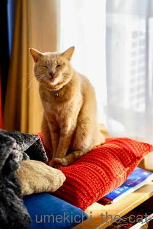
すっかり気持ちが良くなって大欠伸です。
今年は梅吉が我が家に来てから初めてクリスマスグッズを飾りました！
初めて見せた時はツリーにかじりついてきたので即撤収。
今年はそれぞれが時々倒れていたくらいでひどいイタズラはされませんでした(≧▽≦)
梅吉も大人になりました・・・

ぴかぴかするツリーですよー。
こういう所は変わりませんけど(^_^;)
年末頃に恒例にしていた梅吉のフォトブック。
今年は梅吉の誕生日頃（4月）に作ろうかなぁと思っています。
2015年と2016年は頑張って年末に作業していたのですが昨年あたりから頑張れずw
年が明けてのんびりしてから作業する方が良いな、と切り替えました。
出来上がったらブログ記事にしますねー。
さて、今年も一年拙ブログにたくさんのnice !やコメント本当にありがとうございましたm(_ _)m
代わり映えのしない梅吉の記事ばかりですがお付き合いいただいて本当に感謝です！
コスプレ（被り物・巻き物）などは「ようやるわ・・・」の方もいらっしゃるかと思いますが
幸か不幸か梅吉はコスプレイヤーとしてなかなか素質があるようですので（親ばか）
来年もどんどんコスプレしちゃいます＾＾
どうぞよろしくお付き合いくださいませ(^_－)☆
それでは、新しい年が皆様にとって光溢れる明るい年となりますよう願いを込めて
梅吉からささやかですが「光」をお送りしますね＾＾

本年はこれでブログ納めと致します。
年明けの更新は、う〜ん・・・ぼちぼち始めたいと思いますw
皆様、良いお年をー
ちょっと早めの Merry Christmas [梅吉]
クリスマスのプレゼントと今年も一年頑張りましたねって気持ちを込めて
梅吉のまたたびキャンディを新調しました＾＾
時期が悪かったのか商品は売り切れのものが多くまたたびキャンディも「柄おまかせ」のみ。
届いたのは梅吉のテーマカラー、オレンジの可愛いキャンディ。
（他２柄の3個セット。またたびクッキーのおまけが付いてきました＾＾）
好きな柄＆色でラッキー！！
クリスマスまで待てずに早速梅吉にプレゼントしましたよ。
最初は「これは、なんやったっけ・・・？」って顔してましたが匂いを嗅いで豹変 (;^ω^)
ちょっと長い36秒の動画ですがお楽しみください！！
（音は出ません）
大変喜んでいただきました0(≧▽≦)0
皆様にも何か嬉しいプレゼントがありますように！！
さて、一足早いですが梅吉から皆様へささやかな感謝の気持ちを込めて♡

楽しいクリスマスの週末をお過ごしくださいませ＾＾
来週月曜日、24日の更新はお休みしますね。
別にどこに行くわけでもありませんがクリスマス休暇としゃれ込みます(^_－)☆
次回の更新は27日。年内最後の更新になる予定です。
悪魔の足跡？〜浮かび上がる爪痕〜 [梅吉]
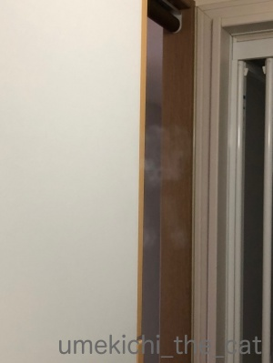
中央付近、ぼんやりと浮かび上がる白い影のようなもの・・・
我が家に何か邪悪なものが！？

もう一箇所見えています。
こちらの方がくっきり正体が見えるでしょうか・・・
爪の長い？生き物の足跡？？きゃ〜！！
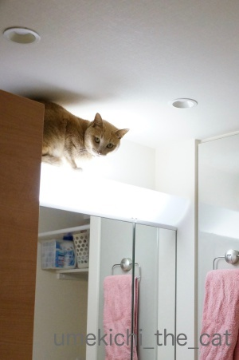
正体は！この方の足跡！！
天井にレジ袋を丸めた球を投げつける遊びがお気に召したのか（狭い空間の方が楽しいらしい）
照明の上が暖かいのかわかりませんが、しょっちゅう洗面ドレッサーの上に上がっています。
乗るときはひとっ飛びですが降りる時は鏡に手をつけながら
ずずずず〜っと滑り降りる感じ。
そのとき鏡にこんな足跡が残ってしまうのです。
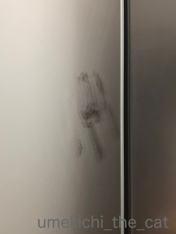
お風呂上がりに蒸気が当たるとこんな風に浮かび上がってもきます。
足跡があるのは分かっちゃいるのですが毎日ちょっとどきっとしますよ (⌒_⌒;
（拭いても拭いてもまた付けられるんですw）
おかーさんの日々のどきっと、何回もガラスを拭く手間なんてどこ吹く風で
ドレッサーの上を楽しむ梅吉さん。
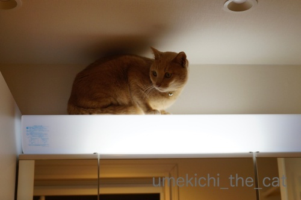

写真の撮り方と顔の角度によっては女優ライトを浴びているようにもなり

怪談を語る稲川淳二風にもなるのでした( ´艸｀)

本格的に寒くなりましたがまだベランダには出たがります。
（もっと寒くなると行きたがらなくなりますw）
外壁での爪とぎ、長いバージョン。
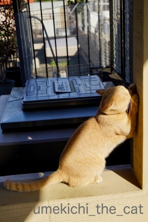
短いバージョン(≧▽≦)
マフラーできりりっ☆ [梅吉]
最近100均に行くと必ずクリスマスグッズ売り場をチェックします。
もちろん梅吉に使えるものはないかと物色するのですが・・・

マフラーを見つけましたよ！
こてつくんのマフラーみたいに可愛い飾りは付いてなかったです。残念。
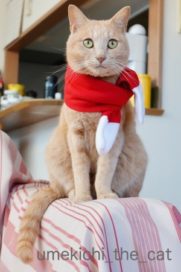
子供用って書いてありましたが梅吉でこんな感じ。
子供と言っても赤ちゃん用かな？

頭にはいろいろ載せてきましたが（ケープはあるけど）巻き物は初めてです。
このお顔はちょっと戸惑っているようにも見えますね。
初めてできた彼女からもらった手編みのマフラーが派手な赤で戸惑う男子中学生
って感じでしょうか(*>艸<)
ちなみに私は中学生の時、黄色いマフラー編んでプレゼントしたことがあります。
何で黄色にしたんだろう・・・
若かったんですねーwww
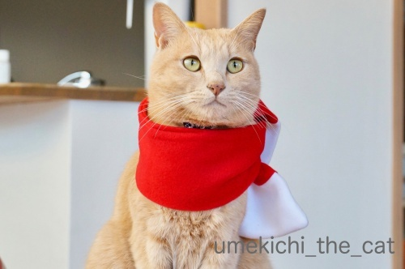
初めての巻き物にも動ずることなくきりりとしたお顔を決めてくれました！
〜梅吉当て字〜
kikiさんのブログ記事で国芳の猫文字を見ていたら梅吉でも出来そうな気がして・・・
出来たのがこれ！


・・・・・「つの」(〃▽〃)
もっといろんな字が見つけられるかなと思ったのですが意外に無いものなんですねー。
「の」と「つ」（「し」）みたいのは沢山。偏りすぎですw
使った写真はこれ。
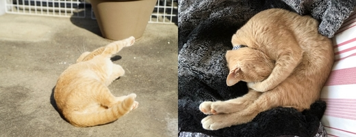
 ↑ガブッと一押し↑
↑ガブッと一押し↑
もちろん梅吉に使えるものはないかと物色するのですが・・・

マフラーを見つけましたよ！
こてつくんのマフラーみたいに可愛い飾りは付いてなかったです。残念。
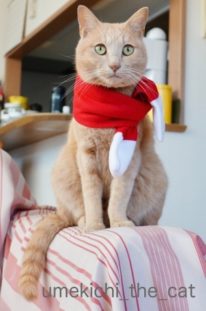
子供用って書いてありましたが梅吉でこんな感じ。
子供と言っても赤ちゃん用かな？

頭にはいろいろ載せてきましたが（ケープはあるけど）巻き物は初めてです。
このお顔はちょっと戸惑っているようにも見えますね。
初めてできた彼女からもらった手編みのマフラーが派手な赤で戸惑う男子中学生
って感じでしょうか(*>艸<)
ちなみに私は中学生の時、黄色いマフラー編んでプレゼントしたことがあります。
何で黄色にしたんだろう・・・
若かったんですねーwww
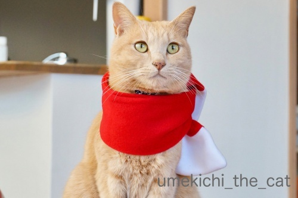
初めての巻き物にも動ずることなくきりりとしたお顔を決めてくれました！
〜梅吉当て字〜
kikiさんのブログ記事で国芳の猫文字を見ていたら梅吉でも出来そうな気がして・・・
出来たのがこれ！


・・・・・「つの」(〃▽〃)
もっといろんな字が見つけられるかなと思ったのですが意外に無いものなんですねー。
「の」と「つ」（「し」）みたいのは沢山。偏りすぎですw
使った写真はこれ。
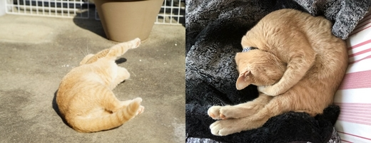
パフパフ、がぶ！ [梅吉]
洗って干しておいたら
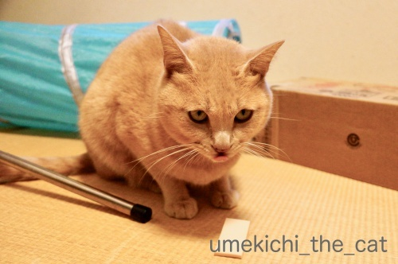
強奪されました。
美味しいものと楽しいものを目の前にすると凶悪顔になるのでしょうか。
舌まで出して悪ーい顔してます(*>艸<)

男性の方は「？」かな。
これはお化粧の時に使うパフなんですよ＾＾
真剣に見つめてます。

ていっ！
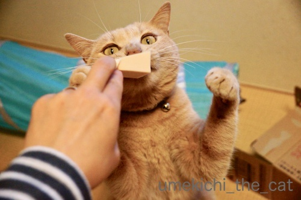
こんなもののどこに興味を惹かれるのか全く分かりませんが夢中です。
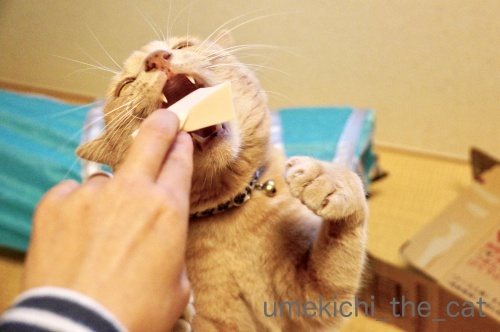
![[猫]](https://blog.ss-blog.jp/_images_e/101.gif) あが〜〜〜〜〜っ
あが〜〜〜〜〜っ
噛み心地だってパフっとするだけだと思いますが
ひたすらガブガブしようと頑張ります(^_^;)

面白さは理解はできませんが楽しいことは分かりますよ、梅吉さんw
この手のものはボロボロにして飲み込んでしまいそうなので即撤収しました。
一度遊ばせたら味をしめてお化粧するたび横からお手手が伸びてきて
めんどくさいことになってます(-_-メ)
ねばーっと後を引く映画「ボヘミアン・ラプソディ」
いまだに毎日一曲はQueenを聞いています。
こんな動画も見つけました＾＾
面白変な顔して弾いてるだけかと思ったら本気でした。
ピアニカって結構肺活量が大変だと思うのですがフレーズ途中で切れることもなく上手い。
ちゃんと音に「泣き」もはいっててメロディラインが歌ってます。
世の中ってつくづくいろんな才能持った人がいるものだなって思いました(≧▽≦）
（お二人フレディとジョンのコスプレ？
ヒゲの人はスーパーマリオにしか見えませんがwww）

そしてそれを真剣に見るにゃんこwww
余談ですけど私が小学生の時使ってたのは「ピアニカ」でした。
「メロディアン」「メロディオン」（も〜さんのコメントで「！！！」そうでしたw訂正いたします）
って言うのもありましたよね。
（前者はヤマハ、後者はスズキ）
いまでも小学校で使っているのかしら・・・
↑ガブッと一押し↑
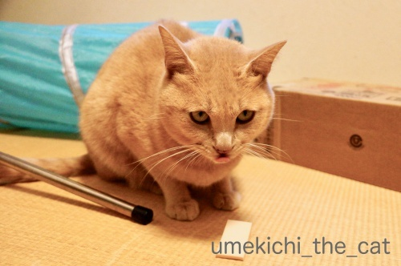
強奪されました。
美味しいものと楽しいものを目の前にすると凶悪顔になるのでしょうか。
舌まで出して悪ーい顔してます(*>艸<)

男性の方は「？」かな。
これはお化粧の時に使うパフなんですよ＾＾
真剣に見つめてます。

ていっ！
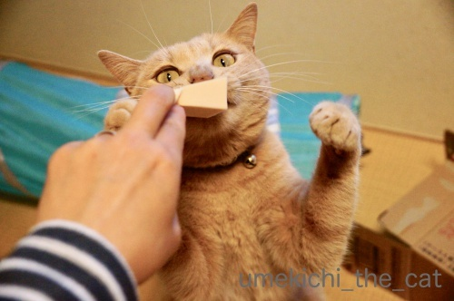
こんなもののどこに興味を惹かれるのか全く分かりませんが夢中です。
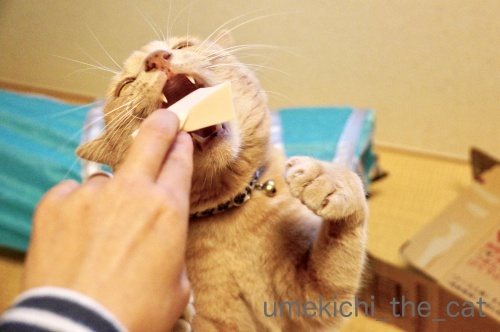
噛み心地だってパフっとするだけだと思いますが
ひたすらガブガブしようと頑張ります(^_^;)

面白さは理解はできませんが楽しいことは分かりますよ、梅吉さんw
この手のものはボロボロにして飲み込んでしまいそうなので即撤収しました。
一度遊ばせたら味をしめてお化粧するたび横からお手手が伸びてきて
めんどくさいことになってます(-_-メ)
ねばーっと後を引く映画「ボヘミアン・ラプソディ」
いまだに毎日一曲はQueenを聞いています。
こんな動画も見つけました＾＾
面白変な顔して弾いてるだけかと思ったら本気でした。
ピアニカって結構肺活量が大変だと思うのですがフレーズ途中で切れることもなく上手い。
ちゃんと音に「泣き」もはいっててメロディラインが歌ってます。
世の中ってつくづくいろんな才能持った人がいるものだなって思いました(≧▽≦）
（お二人フレディとジョンのコスプレ？
ヒゲの人はスーパーマリオにしか見えませんがwww）

そしてそれを真剣に見るにゃんこwww
余談ですけど私が小学生の時使ってたのは「ピアニカ」でした。
って言うのもありましたよね。
（前者はヤマハ、後者はスズキ）
いまでも小学校で使っているのかしら・・・
Umekichi Rolling Special [梅吉]
幼い頃から恒例の梅吉とおとーさんのプロレスですが（参照過去記事１、２）

梅吉の攻めは直線的。愚直にまっすぐ攻め続けるタイプ？
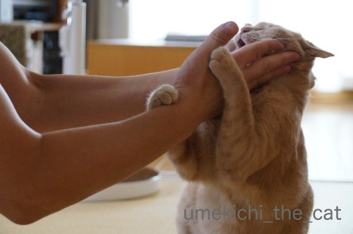
直線的な攻めだとすぐにこう反撃されていました。
が、最近ある変化が！！
くるりと回り込む回転技。完成までのながい、ながい軌跡です。
（制作：おっと 28秒 音量注意です）
くるりと回転してからのガブ蹴り・・・攻撃に隙なし。
良くぞあみだしてくれました・・・（涙
この技は名付けて![[ぴかぴか（新しい）]](https://blog.ss-blog.jp/_images_e/150.gif) URS（Umekichi Rolling Special）！！！
URS（Umekichi Rolling Special）！！！
今、ここに、堂々、完成。
この技、踏切が難しい様で足が合わないことがよくあるのですよ。
内側で踏みきるか、外側で踏み切るかみたいな？(*>艸<)
（今週末はフィギュアのグランプリ・ファイナルですね！！）
失敗バージョンもどうぞー。
（11秒です。音無）
失敗すると悔しさ？照れ隠し？おとーさんの足を静かにガブ (^_^;)
100%完璧に成功するまではまだまだ練習が必要な様です。

捕まってしまって
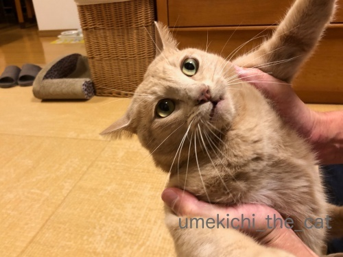
こんなはずじゃなかった、の顔w

プロレスの後は一人でお風呂にこもって反省会してます＾＾
↑ガブッと一押し↑

梅吉の攻めは直線的。愚直にまっすぐ攻め続けるタイプ？
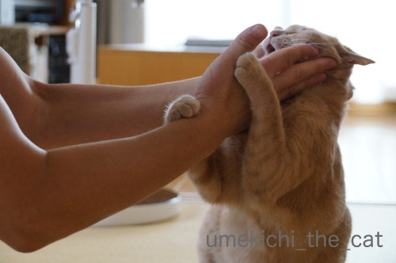
直線的な攻めだとすぐにこう反撃されていました。
が、最近ある変化が！！
くるりと回り込む回転技。完成までのながい、ながい軌跡です。
（制作：おっと 28秒 音量注意です）
くるりと回転してからのガブ蹴り・・・攻撃に隙なし。
良くぞあみだしてくれました・・・（涙
この技は名付けて
今、ここに、堂々、完成。
この技、踏切が難しい様で足が合わないことがよくあるのですよ。
内側で踏みきるか、外側で踏み切るかみたいな？(*>艸<)
（今週末はフィギュアのグランプリ・ファイナルですね！！）
失敗バージョンもどうぞー。
（11秒です。音無）
失敗すると悔しさ？照れ隠し？おとーさんの足を静かにガブ (^_^;)
100%完璧に成功するまではまだまだ練習が必要な様です。

捕まってしまって
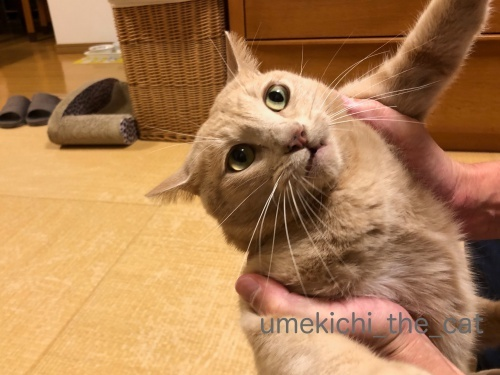
こんなはずじゃなかった、の顔w

プロレスの後は一人でお風呂にこもって反省会してます＾＾
12月はトナカイさん [梅吉]

そうですね。梅吉さんには夜道を走るなんて務まりそうにありませんものね！
勝手に自分の好きなところに行っちゃいそうだし。
でもその半白目はルドルフさんの赤いお鼻よりも
暗い夜道をよく照らしそうですよ( ´艸｀)
〜おまけ〜
トナカイケープから出たおちりが可愛すぎるw

カフェオレ色の梅吉

梅吉 2023年8月10日 永眠


梅吉と出会った譲渡会

犬猫の理由なき殺処分ゼロ
妄想広告
UMEKICHI 光

爆発的に早い！
時々攻撃的！
Thanks to Mr.Boss365
爆発的に早い！
時々攻撃的！
Thanks to Mr.Boss365